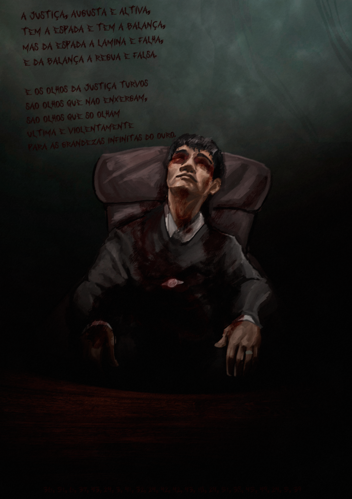

O JUIZ AMALDIÇOADO
O corpo do juiz Alistair Voss, 68, foi encontrado na madrugada desta quarta-feira no antigo Tribunal Criminal de Blackwell Street... A cena, descrita por investigadores como "calculadamente teatral", sugere que o assassino não quer apenas matar, mas busca por algo além disso.
Voss estava sentado em sua antiga cadeira judicial, vestindo o robe negro já manchado de sépias de tempo — e agora, de sangue. Uma espada medieval foi cravada em seu peito, transfixando um pergaminho com um poema, que parece ser a primeira peça de um quebra-cabeça macabro:

A única imagem da cena. A verdade se esconde nos detalhes.
"A Justiça, augusta e altiva,
Tem a espada e tem a balança,
Mas da espada a lâmina é falha,
E da balança a régua é falsa.
E os olhos da Justiça turvos
São olhos que não enxergam,
São olhos que só olham
Última e violentamente
Para as grandezas infinitas do Ouro."
Um arquivo com as evidências digitais foi encontrado, mas está criptografado. A senha parece estar conectada às pistas deixadas para trás.
Comentários (4)
EU TIREI PRINT DA FOTO E APARECEU UMA MÃO NO OM BRO DO JUÍZ!! ALGUÉM ME AJUDE!!!
Ah qual é, gente. É só mais um maluco querendo atenção. Provavelmente alguma campanha de marketing pra um filme de terror. O poema deve ser de algum livro famoso.
Não é marketing, seus tolos. É um aviso. Os Iluminatti estão fazendo a queima de arquivos. O 'Ouro' não é literal, se refere ao topo da pirâmide. ACORDEM!!!
🚨 USUÁRIO "SATANISTA123" BANIDO POR POSTAR CONTEÚDO INADEQUADO 🚨